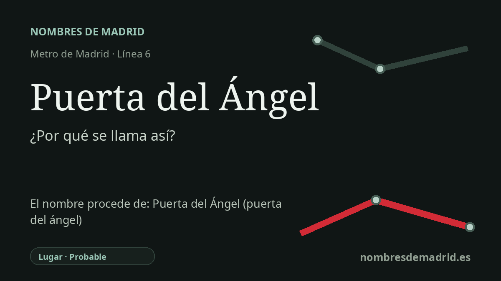

Publicado el · Investigación de Nombres de Madrid · Cómo verificamos cada origen · 9 fuentes consultadas
Respuesta rápida
La estación de Puerta del Ángel lleva el nombre del barrio y la plaza madrileños homónimos. Ese topónimo procede de una antigua puerta de la Casa de Campo asociada a la desaparecida ermita del Santo Ángel de la Guarda.
La historia del nombre
El nombre de metro Puerta del Ángel procede ante todo del lugar que rodea la estación: el barrio, la plaza y el antiguo acceso a la Casa de Campo llamados Puerta del Ángel. La estación actual se sitúa bajo el paseo de Extremadura, cerca del puente de Segovia, precisamente en la zona donde ese topónimo quedó fijado en la geografía urbana madrileña.
Detrás del nombre moderno estuvo una antigua puerta de la Casa de Campo. La documentación municipal sobre la tapia histórica de la Casa de Campo indica que la Puerta del Ángel recibió su nombre de la desaparecida ermita del Santo Ángel de la Guarda, existente en esta zona desde la Edad Moderna hasta el siglo XVIII. La documentación arqueológica de Madrid Río también relaciona el topónimo con el acceso a la Casa de Campo y con la ermita, y recuerda que la vía antigua de este entorno era el camino de Alcorcón o de Extremadura.
La historia religiosa vinculada al nombre se remonta a una imagen del Santo Ángel de la Guarda. Varias fuentes señalan que esa imagen había estado asociada a la Puerta de Guadalajara, en el centro medieval de Madrid, y que después fue colocada en una ermita junto al puente de Segovia. La ermita fue fundada en 1605 por los porteros o maceros del Ayuntamiento de Madrid, un colectivo cuya devoción al Santo Ángel formó parte de la transmisión del nombre.
La cronología no es completamente limpia. Algunas fuentes sitúan la destrucción de la Puerta de Guadalajara en 1580, durante las celebraciones por la anexión de Portugal por Felipe II; otras dan 1582, vinculándola a celebraciones posteriores de la guerra portuguesa. Lo que sí está bien respaldado es la secuencia general: una imagen angélica vinculada a la Puerta de Guadalajara, una ermita fundada en 1605 cerca del puente de Segovia, una puerta de la Casa de Campo llamada Puerta del Ángel y, finalmente, un barrio, una plaza y una estación de metro con ese mismo nombre.
En la historia del transporte, Puerta del Ángel es una estación relativamente moderna. La Comunidad de Madrid documenta la puesta en servicio del cierre circular de la línea 6 en mayo de 1995, con seis estaciones nuevas entre ellas Puerta del Ángel; Memoria de Madrid también describe la estación como inaugurada en mayo de 1995 dentro del tramo Laguna-Ciudad Universitaria. Así, el nombre conserva un topónimo local mucho más antiguo, pero la estación de metro pertenece a la terminación de la línea 6 circular en 1995.